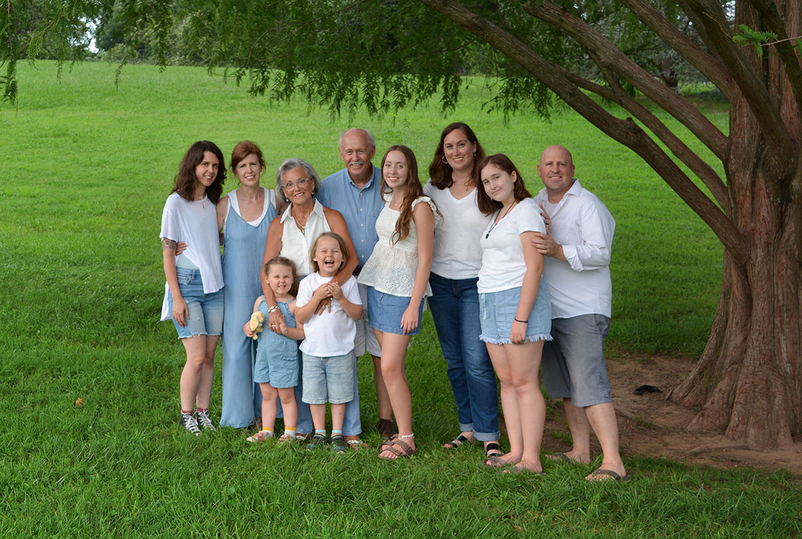
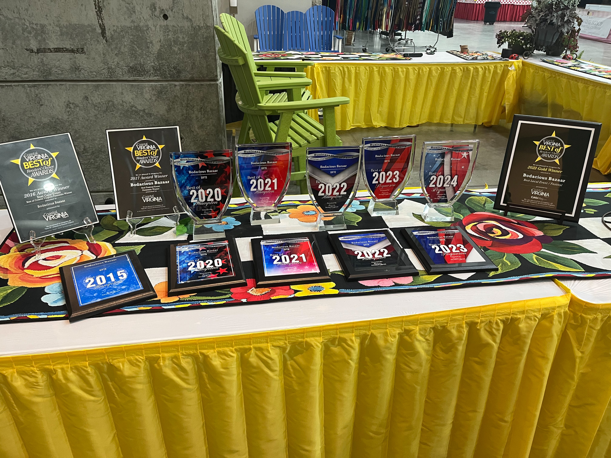
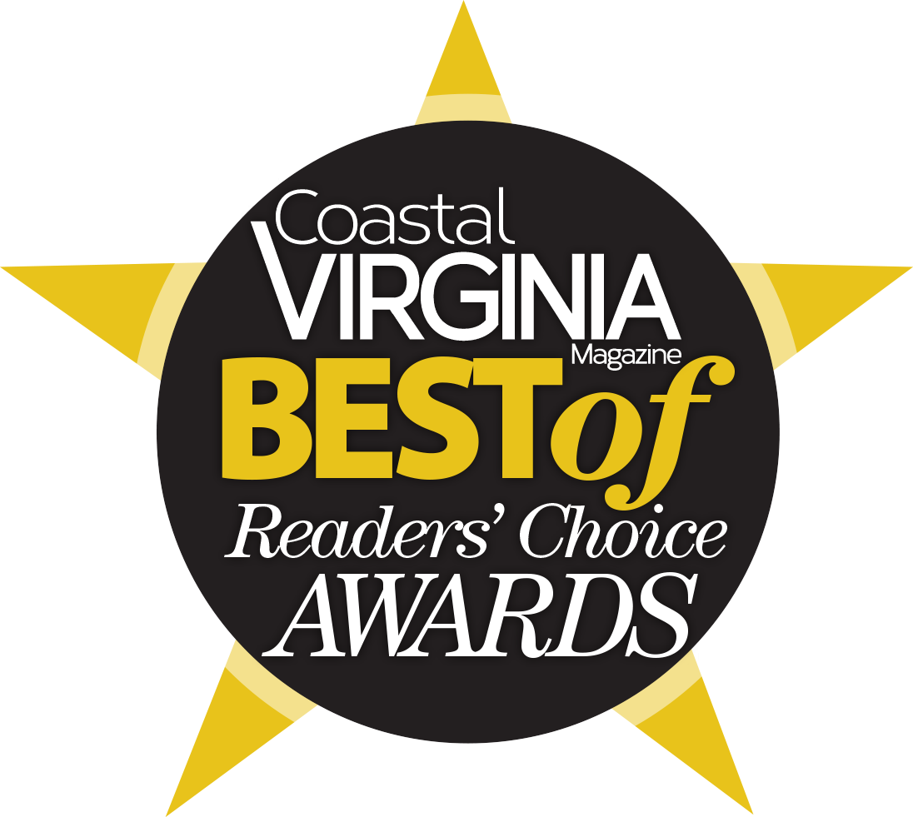
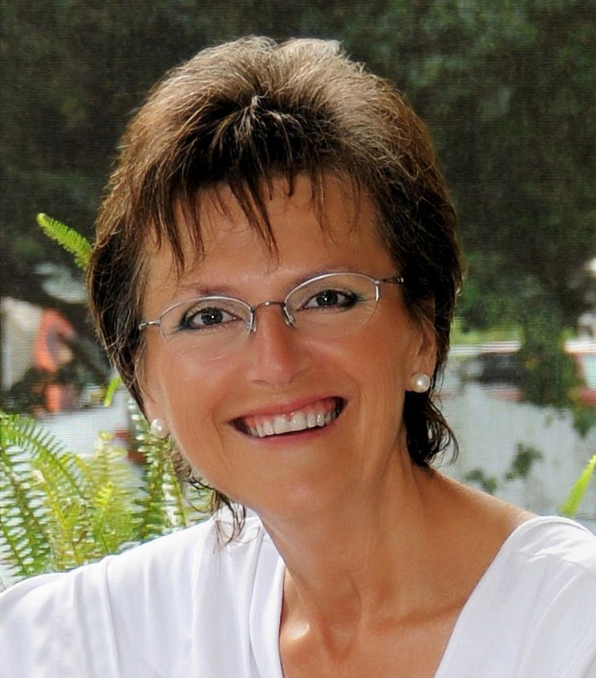
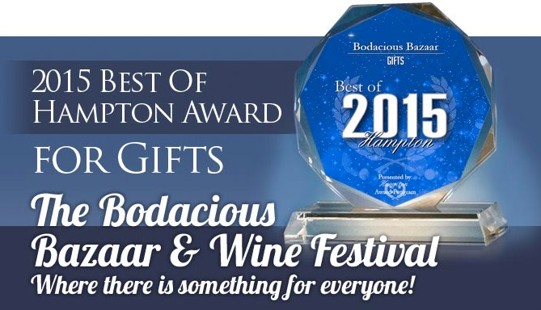

About
Our Mission

We are a family owned and operated business. We are community minded with a strong belief that you get back what you put out. Our goal is to bring a quality show to the Hampton Roads Area and to donate a portion of the proceeds to chosen local nonprofits.News
Best of Hampton

The Bodacious Bazaar has been voted the best place to buy gifts by the local community in 2020, 2021, 2022, 2023, and 2024. We are grateful for the continued support from Hampton Roads shoppers, vendors, and families who make each show such a special local tradition.2023 Awards
WOW!!! Thank you, Tidewater, for voting and loving this event!
Coastal VA Magazine
GOLD! Winner Best of 2023 Festival
Virginia Pilot, Daily Press, & VA Gazette
GOLD! Winner Best of Decorative Accessories
SILVER! Winner Best of Family Entertainment
Coastal Virginia Magazine Best Of Award 2016
The 2016 Coastal Virginia Magazine Best Of Readers' Choice Awards awarded The Bodacious Bazaar as the Best Gala/Event Peninsula Silver for 2016.

2016 Entrepreneurial Excellence Award winner: Sandra Watts Gardner Fun Fetal Photos and The Bodacious Bazaar

Starting the companies “Fun Fetal Photos was easy because I had already scanned thousands of babies in a private practice for 30 years. It was a matter of running the numbers and could I do this by myself without the security of a weekly paycheck. Bodacious Bazaar was an idea backed up by a lot of determination and footwork.”
Hardest part of launching the companies “For Fun Fetal Photos it was having the courage to use the equity in my home to buy an ultrasound machine and rent and furnish an office. For Bodacious Bazaar it was getting vendors to trust me and believe that I could bring the public into a new event.”…
Read More
Bodacious Bazaar Receives 2015 Best of Hampton Award

HAMPTON August 12 2015 — Bodacious Bazaar has been selected for the 2015 Best of Hampton Award in the Gifts category by the Hampton Award Program.
Each year the Hampton Award Program identifies companies that we believe have achieved exceptional marketing success in their local community and business category. These are local companies that enhance the positive image of small business through service to their customers and our community. These exceptional companies help make the Hampton area a great place to live work and play.
Various sources of information were gathered and analyzed to choose the winners in each category. The 2015 Hampton Award Program focuses on quality not quantity. Winners are determined based on the information gathered both internally by the Hampton Award Program and data provided by third parties.
About Hampton Award Program
The Hampton Award Program is an annual awards program honoring the achievements and accomplishments of local businesses throughout the Hampton area. Recognition is given to those companies that have shown the ability to use their best practices and implemented programs to generate competitive advantages and long-term value.
The Hampton Award Program was established to recognize the best of local businesses in our community. Our organization works exclusively with local business owners trade groups professional associations and other business advertising and marketing groups. Our mission is to recognize the small business community’s contributions to the U.S. economy.
SOURCE: Hampton Award Program
CONTACT:
Hampton Award Program
Email: PublicRelations@awardcontact.org
URL: http://www.awardcontact.org
Read about Sandra Gardner founder promoter and owner of the Bodacious Bazaar in The Tidewater Women Article 2014
Virginia House of Delegates and Senate Commends The Bodacious Bazaar
On March 5th 2014 the Virginia House of Delegates and March 7th 2014 the Virginia Senate commended the Bodacious Bazaar for its efforts in supporting nonprofits. The commendation was given to Sandra Gardner founder promoter and owner of the Bodacious Bazaar for her efforts in supporting local nonprofits. Sandra has given these organizations booth space so that they can promote their causes and also has given a portion of the proceeds to many of the nonprofits.
These non-profits include the American Red Cross of Hampton Roads the Virginia Peninsula Food Bank the Junior League of Hampton Roads and the Kelly Weinberg Foundation.
You can read the commendation here:
HOUSE JOINT RESOLUTION NO. 448
What is a Bazaar?
"A bazaar is a marketplace where goods and services are exchanged or sold. The term originates from the Persian word bāzār. The term bazaar is sometimes also used to refer to the "network of merchants, bankers and craftsmen" who work in that area." ~ Wikapedia